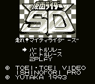

Kamen Rider SD (VGB)

This is a racing game with some unique obstacles and weapons. You must race
Kamen Rider past all these obstacles and enemies. The game has some fair
graphics and fun game play.
Return to Emulator Table of Contents
Last Modified 12 Sept 1996
Created 2 Sept 1996
Luis A. Cruz
cruzl@ccs.neu.edu